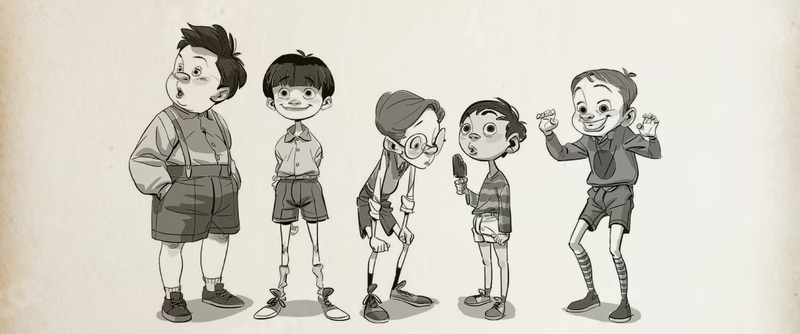
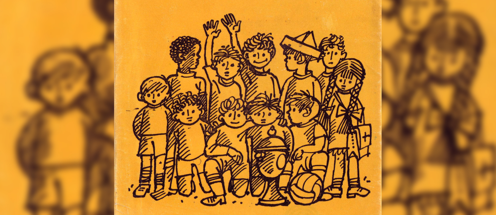
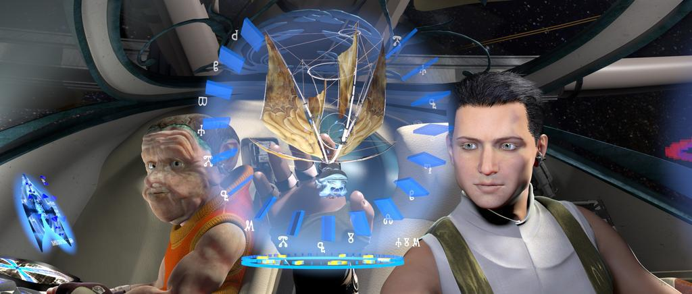

Зрители от други възрасти само с придружител.
Redoubt - an 80-minute CGI animated film for children aged 8–12.
Viewers of other ages are welcome when accompanied by an adult.

Деца, робот, виртуална реалност и маймунка, решават проблеми на зеления терен!
Сага за страсти, дето прескачат през времето и пространството!
Хлапе от детската градина не е прието да играе от група по-големи деца в парка на компютърна игра с виртуална реалност и то ги предизвиква на футболен дуел. Децата приемат дързостта и създават отбор „Редут“, тренират във виртуална реалност в особено смешни условия, преодоляват атаките на съседката Леля Гица и откриват тайната на героите.
Children, a robot, a Virtual Reality game and a monkey solve problems on the green field!
A saga of passions that jump through time and space!
A kindergarten kid is not accepted by a group of older children in the park to play a virtual reality computer game, and they challenge them to a football duel. The children take the audacity and create a team "Redoubt", train in virtual reality in particularly funny conditions, overcome the attacks of their neighbor, Aunt Gitsa, and discover the secret of heroes.
Children, a robot, a Virtual Reality game and a monkey solve problems on the green field!
A saga of passions that jump through time and space!

Присъединете се към нашия екип!
Търсим талантливи:
Дизайнер на персонажи/сцени
Младши/Старши 3D modeler
Младши/Старши 3D аниматор (Maya)
Вие сте:
мотивиран художник,
ентусиазиран да се присъедините към проекта.
Изпратете ни вашето портфолио и автобиография.
Join our Team!
We are looking for talented:
Character/Set Designer
Junior/Senior 3D Modeler
Junior/Senior 3D Animator (Maya)
You are:
a motivated artist,
excited about the opportunity to be part of the project.
Send us your portfolio and CV.

Първият български пълнометражен, стереоскопичен, 3D анимационен филм - Звездният търговец
The first Bulgarian full-length, stereoscopic, 3D animated film - Galaxy trader
„Тим Филм“ е анимационно студио, основано през 1993 г. от Светлин Карлов в Пловдив. Компанията разработва и продуцира оригинални CGI анимационни проекти и създава собствена интелектуална собственост за международните пазари.
"Tim Film" is an animation studio founded in 1993 by Svetlin Karlov in Plovdiv. The company develops and produces original CGI animation projects and creates its own intellectual property for international markets.
Tim Film - Svetlin Karlov
Skopie 41
Plovdiv, 4004
Bulgaria
Mobile: +359 888572371
E-mail: studio@redut.bg